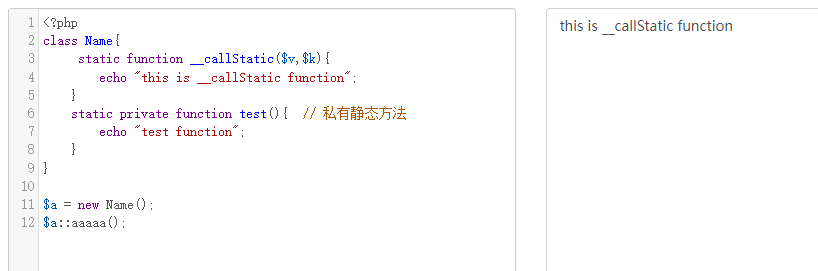

等风来，不如追风去
PHP提供了许多“魔术”方法，这些方法由两个下划线前缀 __ 标识。它们充当拦截器，在满足某些条件时会自动调用它们，魔术方法提供了一些极其有用的功能
常见的魔术方法：
1 | __contruct() 当一个对象创建时被调用 |
__construct()
- 对象创建时被调用
1 |
|
__destruct()
- 对象销毁前被调用
1 | <?php |
程序执行完毕后触发 __destruct() 魔术方法
unset对象后，触发
__sleep()
- 在对象被序列化前被调用
1 |
|
__wakeup()
- 在反序列化一个对象成功后，会自动调用该方法
1 |
|
__toString()
- 当一个对象被当做字符串使用时被调用
- 该方法没有任何参数，也不会传递任何参数，但该方法必须有一个返回值，该返回值必须是字符串，且只能是字符串
1 |
|
__get()
- 获取类的私有属性或不存在的属性时调用此方法
- get函数需要设置有一个参数
1、获取类的私有属性
2、获取不存在的属性
__set()
- 给类中不存在的属性或不可访问的属性赋值
- set函数需要设置有两个参数
1 |
|
1、给私有属性赋值
2、给不存在的属性赋值
__invoke()
- 调用函数的方式调用一个对象时的回应方法
1 |
|
__call
- 调用类中不存在的方法或私有方法时执行
- 该方法有两个参数，第一个参数是调用的那个不存在的 方法名 ，第二个参数是一个数组 ( array ) ，是传递给不存在方法的所有参数组成的数组
1 |
|
1、调用类中的私有方法
2、调用类中不存在的方法
__callStatic()
- 在调用类的一个不存在的静态方法或该方法不可访问（私有方法）时自动调用，作用和原型都类似于
__call() - 该方法同样有两个参数，第一个参数是调用的那个不存在的静态方法名 ，第二个参数是一个数组 ( array ) ，是传递给不存在静态方法的所有参数组成的数组
- 该方法要设置为静态方法(前面要加上一个static)，否则会报
Warning警告
1 |
|
1、调用私有静态方法
2、调用不存在的静态方法
